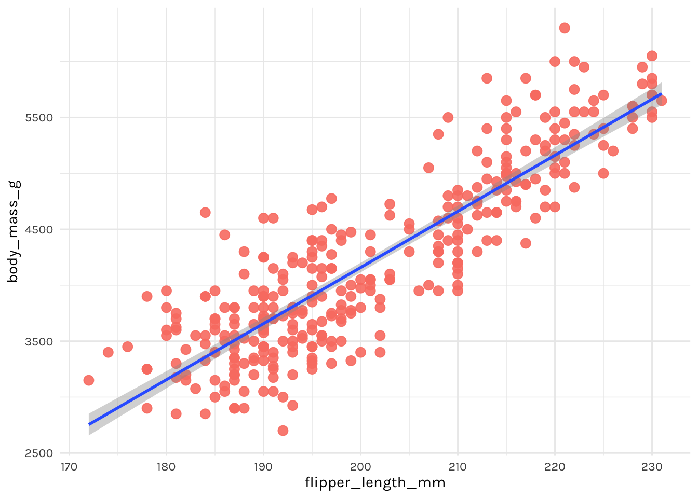
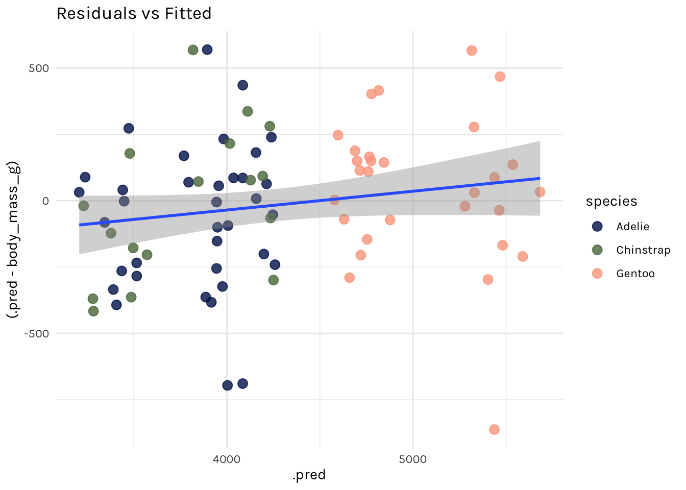

Take a Sad Script & Make it Better: Tidymodels Edition
 Image by
Rachel Martin
Image by
Rachel Martin
A few years ago, I did a talk called “Take a Sad Plot & Make it Better,” where I showed how I took a single sad plot and tried to make it better. The process of making that plot better taught me a lot about data visualization, and about the ggplot2 package.
Fast-forward to 2019 when I started learning
tidymodels, and I have accumulated some pretty sad predictive modeling scripts! And my sad plots are not so lonely anymore. Specifically, my old scripts for doing cross-validation with tidymodels are particularly sad. But, I’ve been able to make them better (one might even call them happy), primarily due to changes in the
tune package and the addition of the fit_resamples() function. The process of making these scripts better taught me a lot about predictive modeling, and about the (evolving) tidymodels ecosystem. So, why write a blog post with outdated code?
- I want to remember that I did this “by hand.”
- I want to remember how I did this “by hand.” The code still works, even if there is now a happier path to doing the same thing.
- I want to share cute penguin art and gifs.
Let’s start with some cute penguin art by Rohan Chakravarty…
My objective here is not to provide an introduction to using tidymodels, cross-validation, or to machine learning. If that is what you came for, check out the project button at the top of this post for my workshop materials for learners, and my associated blog post on the RStudio education site.
A sad script symphony 🎻 🎷 🎹
I’m not the first person to write sad tidymodels scripts- there are many out in the wild. Here were the blog posts that I found most helpful when trying to solve this particular coding conundrum:
-
Modelling with Tidymodels and Parsnip: A Tidy Approach to a Classification Problem by Diego Usai
-
A tutorial on tidy cross-validation with R by Bruno Rodrigues
-
Modeling with parsnip and tidymodels by Benjamin Sorensen
Packages
library(tidyverse)
library(tidymodels)
library(rpart) # for decision tree
library(ranger) # for random forest
Data
I’m going to use data that Allison Horst helped me source on penguins from the Palmer Station (Antarctica) Long Term Ecological Research Network.
“sooo now I’m just looking at penguin pictures”
- Allison Horst after slacking me this penguin data
install.packages("remotes") # to install from github
remotes::install_github("allisonhorst/palmerpenguins")

After you’ve installed the package, load it and read about the variables with ?penguins. We’ll modify this dataset lightly by:
- casting all characters as factors,
- dropping any observations with missing data, and
- dropping the
islandvariable.
library(palmerpenguins)
tidypenguins <- penguins %>%
select(-island) %>%
drop_na()
glimpse(tidypenguins)
#> Rows: 333
#> Columns: 7
#> $ species <fct> Adelie, Adelie, Adelie, Adelie, Adelie, Adelie, Ade…
#> $ bill_length_mm <dbl> 39.1, 39.5, 40.3, 36.7, 39.3, 38.9, 39.2, 41.1, 38.…
#> $ bill_depth_mm <dbl> 18.7, 17.4, 18.0, 19.3, 20.6, 17.8, 19.6, 17.6, 21.…
#> $ flipper_length_mm <int> 181, 186, 195, 193, 190, 181, 195, 182, 191, 198, 1…
#> $ body_mass_g <int> 3750, 3800, 3250, 3450, 3650, 3625, 4675, 3200, 380…
#> $ sex <fct> male, female, female, female, male, female, male, f…
#> $ year <int> 2007, 2007, 2007, 2007, 2007, 2007, 2007, 2007, 200…
Penguins

Figure 1: Artwork by @allisonhorst
This data included structural size measurements of penguins like their bill length, flipper length, and body mass. It also included each penguin’s species and sex. I’m going to use this data to try to predict penguin body mass. Sadly, we only have data for three distinct penguin species:
tidypenguins %>%
count(species)
#> # A tibble: 3 x 2
#> species n
#> <fct> <int>
#> 1 Adelie 146
#> 2 Chinstrap 68
#> 3 Gentoo 119
Here is a lineup:

From: https://www.bas.ac.uk/about/antarctica/wildlife/penguins/
Looks like we have data for 3 of the smaller penguin species (of those pictured here).
First, let’s build a simple linear regression model to predict body mass from flipper length.
ggplot(tidypenguins, aes(x = flipper_length_mm, y = body_mass_g)) +
geom_point(color = "salmon", size = 3, alpha = .9) +
geom_smooth(method = "lm") +
theme_penguin()

Not bad! Looks promising. To actually fit a linear regression model, you might be used to something like this in R:
penguin_mod <- lm(body_mass_g ~ flipper_length_mm, data = tidypenguins)
summary(penguin_mod)
#>
#> Call:
#> lm(formula = body_mass_g ~ flipper_length_mm, data = tidypenguins)
#>
#> Residuals:
#> Min 1Q Median 3Q Max
#> -1057.33 -259.79 -12.24 242.97 1293.89
#>
#> Coefficients:
#> Estimate Std. Error t value Pr(>|t|)
#> (Intercept) -5872.09 310.29 -18.93 <2e-16 ***
#> flipper_length_mm 50.15 1.54 32.56 <2e-16 ***
#> ---
#> Signif. codes: 0 '***' 0.001 '**' 0.01 '*' 0.05 '.' 0.1 ' ' 1
#>
#> Residual standard error: 393.3 on 331 degrees of freedom
#> Multiple R-squared: 0.7621, Adjusted R-squared: 0.7614
#> F-statistic: 1060 on 1 and 331 DF, p-value: < 2.2e-16
But we aren’t going to stick with this. We are going to use tidymodels, with the goal of generating accurate predictions for future, yet-to-be-seen penguins.

tidymodels 101
The code provided in the section below is not particularly sad 🐧. If you are embarking on learning tidymodels, you’ll need to use this same kind of code as the building blocks for any predictive modeling pipeline.
Parsnip: build the model
This step is really three, using only the parsnip package:
lm_spec <-
linear_reg() %>% # pick model
set_engine("lm") %>% # set engine
set_mode("regression") # set mode
lm_spec
#> Linear Regression Model Specification (regression)
#>
#> Computational engine: lm
Things that are missing: data (we haven’t touched it yet) and a formula (no data, no variables, no twiddle ~). This is an abstract model specification. See other possible parsnip models
here.
Recipe: not happening here, folks
This is where you would normally insert some code for feature engineering using the
recipes package. But previously this required functions named prep(), bake(), juice()- so I’m willfully ignoring that for now. There will be no recipes involving penguins.

Rsample: initial split
We’ll use the rsample package to split (ayee! I promise no penguins were hurt in the writing of this blog post) the penguins up into two datasets: training and testing. If you are unfamiliar with this practice, read up on the holdout method.
penguin_split <- initial_split(tidypenguins, strata = species)
penguin_train <- training(penguin_split)
penguin_test <- testing(penguin_split)
Fitting the model once
Fitting a single model once is…not exactly the hardest part.

This is essentially the workflow from this early blog post.
set.seed(0)
lm_spec %>%
# train: get fitted model
fit(body_mass_g ~ ., data = penguin_train) %>%
# test: get predictions
predict(new_data = penguin_test) %>%
# compare: get metrics
bind_cols(penguin_test) %>%
rmse(truth = body_mass_g, estimate = .pred)
#> # A tibble: 1 x 3
#> .metric .estimator .estimate
#> <chr> <chr> <dbl>
#> 1 rmse standard 278.
Fitting the model with a function
If you squint, you might see that I could make this into a function like below:
get_rmse <- function(model_spec, split) {
model_spec %>%
# train: get fitted model
fit(body_mass_g ~ ., data = training(split)) %>%
# test: get predictions
predict(new_data = testing(split)) %>%
# compare: get metrics
bind_cols(testing(split)) %>%
rmse(truth = body_mass_g, estimate = .pred)
}
And I could use it to fit a linear regression model:
set.seed(0)
get_rmse(model_spec = lm_spec, split = penguin_split)
#> # A tibble: 1 x 3
#> .metric .estimator .estimate
#> <chr> <chr> <dbl>
#> 1 rmse standard 278.
I could also build up a tibble that includes the results, if I wanted to save the predicted values, for example:
get_preds <- function(model_spec, split){
# train: get fitted model
fit_model <- model_spec %>%
fit(body_mass_g ~ ., data = training(split))
# test: get predictions
preds <- fit_model %>%
predict(new_data = testing(split)) %>%
bind_cols(testing(split) %>% select(body_mass_g, species))
preds
}
set.seed(0)
penguin_preds <- get_preds(model_spec = lm_spec, split = penguin_split)
Then I can work with the predicted values, like plotting the fitted body mass estimates against the residuals.
ggplot(penguin_preds, aes(x = .pred, y = (.pred - body_mass_g))) +
geom_point(aes(colour = species), size = 3, alpha = .8) +
geom_smooth(method = "lm") +
theme_penguin() +
scico::scale_colour_scico_d(end = .8) +
ggtitle("Residuals vs Fitted")
#> `geom_smooth()` using formula 'y ~ x'

# compare: get metrics
penguin_preds %>%
rmse(truth = body_mass_g, estimate = .pred)
#> # A tibble: 1 x 3
#> .metric .estimator .estimate
#> <chr> <chr> <dbl>
#> 1 rmse standard 278.
Or I could fit a regression tree model with a new model spec:
# regression tree model spec
rt_spec <-
decision_tree() %>%
set_engine("rpart") %>%
set_mode("regression")
# get rmse
set.seed(0)
get_preds(model_spec = rt_spec,
split = penguin_split) %>%
rmse(truth = body_mass_g, estimate = .pred)
#> # A tibble: 1 x 3
#> .metric .estimator .estimate
#> <chr> <chr> <dbl>
#> 1 rmse standard 312.
Or a random forest:
# random forest model spec
rf_spec <-
rand_forest() %>%
set_engine("ranger") %>%
set_mode("regression")
# get rmse
set.seed(0)
get_preds(model_spec = rf_spec,
split = penguin_split) %>%
rmse(truth = body_mass_g, estimate = .pred)
#> # A tibble: 1 x 3
#> .metric .estimator .estimate
#> <chr> <chr> <dbl>
#> 1 rmse standard 300.
But, unfortunately, I shouldn’t be predicting with the test set over and over again like this. It isn’t good practice to predict with the test set > 1 time. What is a good predictive modeler to do? I should be saving (holding out) the test set and use it to generate predictions exactly once, at the very end — after I’ve compared different models, selected my features, and tuned my hyperparameters. How do you do this? You do cross-validation with the training set, and you leave the testing set for the very last fit you do.

Hey Jude, don’t make it sad 🎶
Now, for the 😭 part- let’s add cross-validation! To do this, we’ll use a function called
rsample::vfold_cv().
# add the cv step here
set.seed(0)
penguin_folds <- vfold_cv(data = penguin_train, strata = "species")
penguin_folds
#> # 10-fold cross-validation using stratification
#> # A tibble: 10 x 2
#> splits id
#> <list> <chr>
#> 1 <split [225/26]> Fold01
#> 2 <split [226/25]> Fold02
#> 3 <split [226/25]> Fold03
#> 4 <split [226/25]> Fold04
#> 5 <split [226/25]> Fold05
#> 6 <split [226/25]> Fold06
#> 7 <split [226/25]> Fold07
#> 8 <split [226/25]> Fold08
#> 9 <split [226/25]> Fold09
#> 10 <split [226/25]> Fold10
The process of training, testing, and computing metrics gets a lot harder when you need to do this across 10 folds, each with a different data split. I eventually worked out three approaches, which I show below. All require some level of comfort with iteration using the purrr package.
Function with minimal purrr-ing
This approach is essentially a mega-function, that we then use purrr to map across each fold.
I’m going to change a few things from my previous get_preds() function:
training(split)->analysis(split)testing(split)->assessment(split)- I also added the
rsample::add_resample_id()function to keep track of the fold number. - I saved the predictions now as a list column.
To build up this function, my strategy was to figure out how to work with one fold, then I knew I’d be able to use purrr::map_df() to apply it across multiple folds.
# Figure it out for one fold
get_fold_results <- function(model_spec, split){
# train: get fitted model for each fold
fits <- model_spec %>%
fit(body_mass_g ~ ., data = analysis(split))
# test: get predictions on for each fold
preds <- fits %>%
predict(new_data = assessment(split)) %>%
bind_cols(assessment(split))
# compare: compute metric for each fold
rmse <- assessment(split) %>%
summarize(rmse = rmse_vec(truth = body_mass_g,
estimate = preds$.pred))
rmse %>%
# add fold identifier column
rsample::add_resample_id(split = split) %>%
as_tibble() %>%
# add predictions
mutate(preds = list(preds))
}
I tried this function with a single fold first:
set.seed(0)
get_fold_results(
split = penguin_folds$splits[[1]],
model_spec = rt_spec
)
#> # A tibble: 1 x 3
#> rmse id preds
#> <dbl> <chr> <list>
#> 1 419. Fold01 <tibble [26 × 8]>
Next, I used purrr- but just once. The function get_fold_results is doing most of the work for us, but I needed purrr to map it across each fold.
set.seed(0)
kfold_results <-
map_df(
penguin_folds$splits,
~get_fold_results(.x, model = rt_spec))
kfold_results
#> # A tibble: 10 x 3
#> rmse id preds
#> <dbl> <chr> <list>
#> 1 419. Fold01 <tibble [26 × 8]>
#> 2 326. Fold02 <tibble [25 × 8]>
#> 3 414. Fold03 <tibble [25 × 8]>
#> 4 327. Fold04 <tibble [25 × 8]>
#> 5 336. Fold05 <tibble [25 × 8]>
#> 6 406. Fold06 <tibble [25 × 8]>
#> 7 305. Fold07 <tibble [25 × 8]>
#> 8 301. Fold08 <tibble [25 × 8]>
#> 9 315. Fold09 <tibble [25 × 8]>
#> 10 319. Fold10 <tibble [25 × 8]>
Here we are still left with 10 RMSE values- one for each of the 10 folds. We don’t care too much about by fold- the power is in the aggregate. Specifically, we mainly care about the central tendency and spread of these RMSE values. Let’s finish by combining (or aggregating) these metrics.
kfold_results %>%
summarize(mean_rmse = mean(rmse), sd_rmse = sd(rmse))
#> # A tibble: 1 x 2
#> mean_rmse sd_rmse
#> <dbl> <dbl>
#> 1 347. 46.8
So, this works. But, can you imagine doing it again? Without errors? Can you imagine teaching it?

Purrr-to-the-max
This approach is purrr::map() (and friends) on steriods. We use vanilla map(), map2(), and map2_dbl() here. We also use
anonymous functions as a formula, and the pipe operator within those anonymous functions.
set.seed(0)
penguin_res <- penguin_folds %>%
mutate(
# train: get fitted model for each fold
train_set = map(splits, analysis),
fit_models = map(train_set, ~rt_spec %>%
fit(body_mass_g ~ .,
data = .x)),
# test: get predictions for each fold
test_set = map(splits, assessment),
estimates = map2(fit_models,
test_set,
~.x %>%
predict(.y)),
# compare: compute metric for each fold
rmse = map2_dbl(test_set,
estimates,
~rmse_vec(truth = .x$body_mass_g,
estimate = .y$.pred))
)
penguin_res
#> # 10-fold cross-validation using stratification
#> # A tibble: 10 x 7
#> splits id train_set fit_models test_set estimates rmse
#> <list> <chr> <list> <list> <list> <list> <dbl>
#> 1 <split [225… Fold01 <tibble [225… <fit[+]> <tibble [26… <tibble [26 … 419.
#> 2 <split [226… Fold02 <tibble [226… <fit[+]> <tibble [25… <tibble [25 … 326.
#> 3 <split [226… Fold03 <tibble [226… <fit[+]> <tibble [25… <tibble [25 … 414.
#> 4 <split [226… Fold04 <tibble [226… <fit[+]> <tibble [25… <tibble [25 … 327.
#> 5 <split [226… Fold05 <tibble [226… <fit[+]> <tibble [25… <tibble [25 … 336.
#> 6 <split [226… Fold06 <tibble [226… <fit[+]> <tibble [25… <tibble [25 … 406.
#> 7 <split [226… Fold07 <tibble [226… <fit[+]> <tibble [25… <tibble [25 … 305.
#> 8 <split [226… Fold08 <tibble [226… <fit[+]> <tibble [25… <tibble [25 … 301.
#> 9 <split [226… Fold09 <tibble [226… <fit[+]> <tibble [25… <tibble [25 … 315.
#> 10 <split [226… Fold10 <tibble [226… <fit[+]> <tibble [25… <tibble [25 … 319.
penguin_res %>%
summarise(mean_rmse = mean(rmse), sd_rmse = sd(rmse))
#> # A tibble: 1 x 2
#> mean_rmse sd_rmse
#> <dbl> <dbl>
#> 1 347. 46.8
The purrr mash-up
Another way I worked out was largely after reviewing Max’s slides from previous workshops. This is basically a mash-up of my previous two approaches, where we write laser-focused functions that each do one thing, then use purrr to apply those functions across the folds. This way is nice(r) for showing in slides as you can incrementally build up the results table. Let’s see this sad script in action…
Round 1
set.seed(0) # for reproducibility
# train: get fitted model for a split
get_fits <- function(split, model_spec){
model_spec %>%
fit(body_mass_g ~ .,
data = analysis(split))
}
# train: get fitted models across folds
penguin_purrr <- penguin_folds %>%
mutate(rt_fits = map(splits, get_fits, rt_spec))
penguin_purrr
#> # 10-fold cross-validation using stratification
#> # A tibble: 10 x 3
#> splits id rt_fits
#> <list> <chr> <list>
#> 1 <split [225/26]> Fold01 <fit[+]>
#> 2 <split [226/25]> Fold02 <fit[+]>
#> 3 <split [226/25]> Fold03 <fit[+]>
#> 4 <split [226/25]> Fold04 <fit[+]>
#> 5 <split [226/25]> Fold05 <fit[+]>
#> 6 <split [226/25]> Fold06 <fit[+]>
#> 7 <split [226/25]> Fold07 <fit[+]>
#> 8 <split [226/25]> Fold08 <fit[+]>
#> 9 <split [226/25]> Fold09 <fit[+]>
#> 10 <split [226/25]> Fold10 <fit[+]>
Round 2
# test: get predictions for a split
get_preds <- function(split, fit_df) {
fit_df %>%
predict(new_data = assessment(split)) %>%
bind_cols(assessment(split))
}
# test: get predictions across folds
penguin_purrr <- penguin_purrr %>%
mutate(rt_preds = map2(splits, rt_fits, get_preds))
penguin_purrr
#> # 10-fold cross-validation using stratification
#> # A tibble: 10 x 4
#> splits id rt_fits rt_preds
#> <list> <chr> <list> <list>
#> 1 <split [225/26]> Fold01 <fit[+]> <tibble [26 × 8]>
#> 2 <split [226/25]> Fold02 <fit[+]> <tibble [25 × 8]>
#> 3 <split [226/25]> Fold03 <fit[+]> <tibble [25 × 8]>
#> 4 <split [226/25]> Fold04 <fit[+]> <tibble [25 × 8]>
#> 5 <split [226/25]> Fold05 <fit[+]> <tibble [25 × 8]>
#> 6 <split [226/25]> Fold06 <fit[+]> <tibble [25 × 8]>
#> 7 <split [226/25]> Fold07 <fit[+]> <tibble [25 × 8]>
#> 8 <split [226/25]> Fold08 <fit[+]> <tibble [25 × 8]>
#> 9 <split [226/25]> Fold09 <fit[+]> <tibble [25 × 8]>
#> 10 <split [226/25]> Fold10 <fit[+]> <tibble [25 × 8]>
aaaand Round 3
# compare: compute metric for a split
get_rmse <- function(pred_df) {
pred_df %>%
rmse(truth = body_mass_g,
estimate = .pred) %>%
pluck(".estimate")
}
# compare: compute metric across folds
penguin_purrr <- penguin_purrr %>%
mutate(rt_rmse = map_dbl(rt_preds, get_rmse))
penguin_purrr
#> # 10-fold cross-validation using stratification
#> # A tibble: 10 x 5
#> splits id rt_fits rt_preds rt_rmse
#> <list> <chr> <list> <list> <dbl>
#> 1 <split [225/26]> Fold01 <fit[+]> <tibble [26 × 8]> 419.
#> 2 <split [226/25]> Fold02 <fit[+]> <tibble [25 × 8]> 326.
#> 3 <split [226/25]> Fold03 <fit[+]> <tibble [25 × 8]> 414.
#> 4 <split [226/25]> Fold04 <fit[+]> <tibble [25 × 8]> 327.
#> 5 <split [226/25]> Fold05 <fit[+]> <tibble [25 × 8]> 336.
#> 6 <split [226/25]> Fold06 <fit[+]> <tibble [25 × 8]> 406.
#> 7 <split [226/25]> Fold07 <fit[+]> <tibble [25 × 8]> 305.
#> 8 <split [226/25]> Fold08 <fit[+]> <tibble [25 × 8]> 301.
#> 9 <split [226/25]> Fold09 <fit[+]> <tibble [25 × 8]> 315.
#> 10 <split [226/25]> Fold10 <fit[+]> <tibble [25 × 8]> 319.
Finally, summarizing as I did before:
penguin_purrr %>%
summarize(mean_rmse = mean(rt_rmse), sd_rmse = sd(rt_rmse))
#> # A tibble: 1 x 2
#> mean_rmse sd_rmse
#> <dbl> <dbl>
#> 1 347. 46.8
In practice, if you did all these at once instead of incrementally, it would look like:
set.seed(0)
penguin_folds %>%
# train: get fitted model for a split
mutate(rt_fits = map(splits, get_fits, rt_spec)) %>%
# test: get predictions on for each fold
mutate(rt_preds = map2(splits, rt_fits, get_preds)) %>%
# compare: compute metric for each fold
mutate(rt_rmse = map_dbl(rt_preds, get_rmse))
#> # 10-fold cross-validation using stratification
#> # A tibble: 10 x 5
#> splits id rt_fits rt_preds rt_rmse
#> <list> <chr> <list> <list> <dbl>
#> 1 <split [225/26]> Fold01 <fit[+]> <tibble [26 × 8]> 419.
#> 2 <split [226/25]> Fold02 <fit[+]> <tibble [25 × 8]> 326.
#> 3 <split [226/25]> Fold03 <fit[+]> <tibble [25 × 8]> 414.
#> 4 <split [226/25]> Fold04 <fit[+]> <tibble [25 × 8]> 327.
#> 5 <split [226/25]> Fold05 <fit[+]> <tibble [25 × 8]> 336.
#> 6 <split [226/25]> Fold06 <fit[+]> <tibble [25 × 8]> 406.
#> 7 <split [226/25]> Fold07 <fit[+]> <tibble [25 × 8]> 305.
#> 8 <split [226/25]> Fold08 <fit[+]> <tibble [25 × 8]> 301.
#> 9 <split [226/25]> Fold09 <fit[+]> <tibble [25 × 8]> 315.
#> 10 <split [226/25]> Fold10 <fit[+]> <tibble [25 × 8]> 319.
When you put it like that, it doesn’t look like so much work! But, this way hides how much work it takes to write those 3 custom functions: get_fits(), get_preds(), and get_rmse(). And we still had to use vanilla map(), map2(), and map2_dbl().
Make it better
I kept a learning log while working through the all the above code, and I wrote down these notes to myself:
-
It is very easy to do the wrong thing; it is very hard to do the right thing.
-
I lost sight many times of what the code I was writing was doing, because I was using up so much cognitive energy on getting the code to just work.
-
I thought I knew how to use purrr…
If you have made it this far, I’m pretty sure I don’t need to convince you that a better way to do cross-validation using tidymodels would be more pleasant to do more than once. It would also be less prone to error due to me copying-and-pasting repeatedly, and making stupid mistakes that would be difficult to spot with so much cluttered code. Luckily,
tune::fit_resamples() came along to take a sad script and make it better:
penguin_party <-
tune::fit_resamples(
rt_spec,
body_mass_g ~ .,
resamples = penguin_folds
)
Here is the beautiful output from that function:
penguin_party
#> # Resampling results
#> # 10-fold cross-validation using stratification
#> # A tibble: 10 x 4
#> splits id .metrics .notes
#> <list> <chr> <list> <list>
#> 1 <split [225/26]> Fold01 <tibble [2 × 3]> <tibble [0 × 1]>
#> 2 <split [226/25]> Fold02 <tibble [2 × 3]> <tibble [0 × 1]>
#> 3 <split [226/25]> Fold03 <tibble [2 × 3]> <tibble [0 × 1]>
#> 4 <split [226/25]> Fold04 <tibble [2 × 3]> <tibble [0 × 1]>
#> 5 <split [226/25]> Fold05 <tibble [2 × 3]> <tibble [0 × 1]>
#> 6 <split [226/25]> Fold06 <tibble [2 × 3]> <tibble [0 × 1]>
#> 7 <split [226/25]> Fold07 <tibble [2 × 3]> <tibble [0 × 1]>
#> 8 <split [226/25]> Fold08 <tibble [2 × 3]> <tibble [0 × 1]>
#> 9 <split [226/25]> Fold09 <tibble [2 × 3]> <tibble [0 × 1]>
#> 10 <split [226/25]> Fold10 <tibble [2 × 3]> <tibble [0 × 1]>
Now, to see all the stuff inside this penguin_party, we can use tune’s collect_* functions.
penguin_party %>%
collect_metrics()
#> # A tibble: 2 x 5
#> .metric .estimator mean n std_err
#> <chr> <chr> <dbl> <int> <dbl>
#> 1 rmse standard 347. 10 14.8
#> 2 rsq standard 0.839 10 0.0141
To see the predictions, we need to add use
control_resamples():
penguin_party <-
tune::fit_resamples(
rt_spec,
body_mass_g ~ .,
resamples = penguin_folds,
control = control_resamples(save_pred = TRUE) # add this line
)
Then we collect the predictions.
penguin_party %>%
collect_predictions()
#> # A tibble: 251 x 4
#> id .pred .row body_mass_g
#> <chr> <dbl> <int> <int>
#> 1 Fold01 3402. 4 3625
#> 2 Fold01 3402. 11 3325
#> 3 Fold01 3988. 14 3950
#> 4 Fold01 3988. 41 3700
#> 5 Fold01 3402. 54 3700
#> 6 Fold01 3988. 65 3950
#> 7 Fold01 3988. 70 4450
#> 8 Fold01 3402. 71 3300
#> 9 Fold01 3402. 76 3075
#> 10 Fold01 3402. 85 2900
#> # … with 241 more rows
Now, isn’t that better?

Katrien Antonio
professor in actuarial science and insurance analytics
I’m a professor in actuarial science who loves data science, programming and teaching.